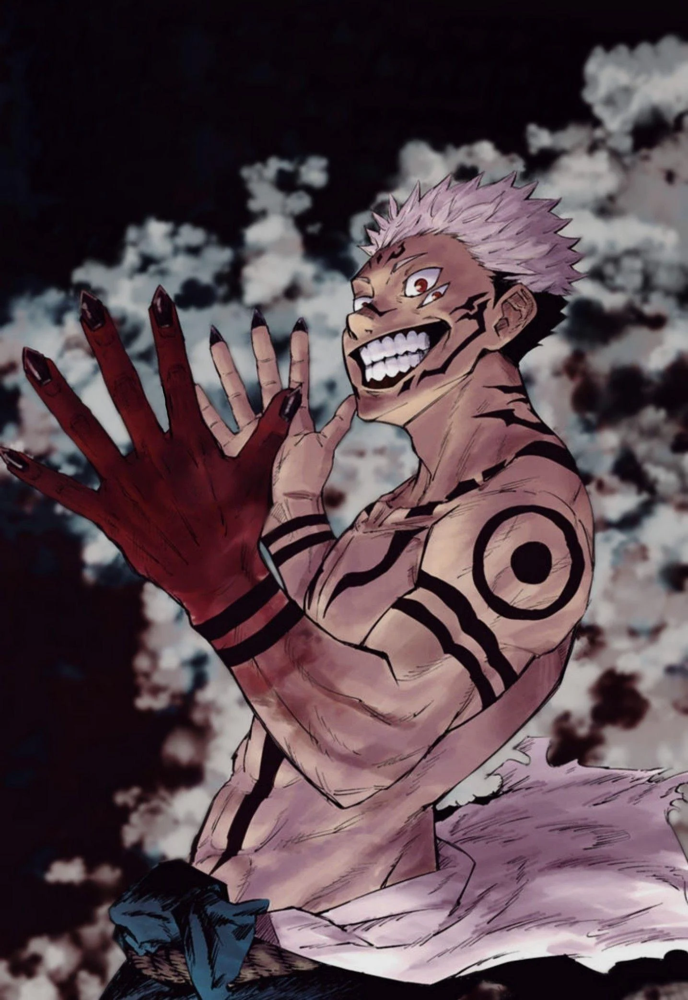
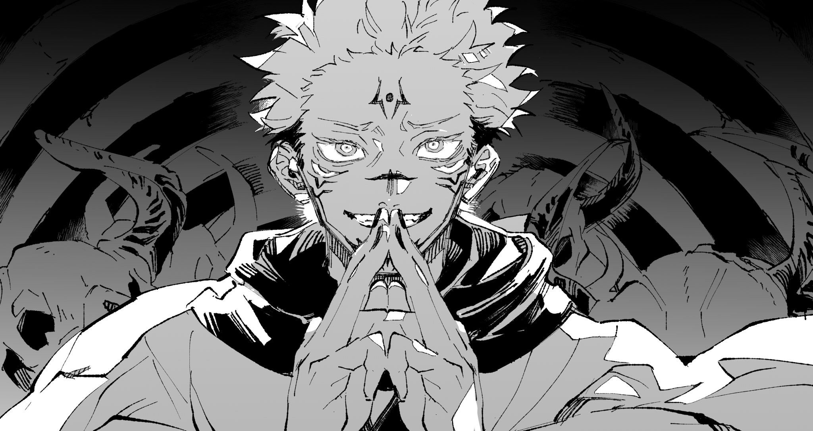

|
|
|
|
|
|
|
|
|

|
APÓS A REVELAÇÃO DOS PODERES DA ERA HEIAN, FÃS CRIAM MEMES
CRIATIVOS.
Os fãs fervorosos do anime "Jujutsu Kaisen" foram levados à loucura esta semana com a
revelação de que Sukuna, o Rei das Maldições, despertou poderes há muito adormecidos da
Era
Heian. Desde que a notícia surgiu, as redes sociais estão inundadas com uma enxurrada de
memes hilariantes e criativos, refletindo a excitação e a surpresa dos espectadores.
A descoberta dos poderes da Era Heian de Sukuna, durante a batalha épica contra um novo
antagonista, foi um momento de virada no enredo, deixando os fãs ansiosos para ver como
isso
afetará o curso da história.
No entanto, em vez de apenas discutir teorias e previsões,
os
admiradores decidiram canalizar sua energia para a criação de memes que capturam
perfeitamente a intensidade do momento e a natureza irônica da situação.
|
|
|
|
Desde imagens editadas de Sukuna vestindo trajes tradicionais da Era Heian até gifs
engraçados retratando o choque dos personagens principais, como Yuji Itadori e Megumi
Fushiguro, os memes estão se espalhando rapidamente pelas plataformas de mídia social.
Hashtags como #SukunaHeian e #JujutsuMemes estão liderando as tendências, com os fãs
competindo para ver quem consegue criar o meme mais criativo e hilário.
Alguns fãs estão até mesmo especulando sobre como os novos poderes de Sukuna poderiam ser
usados em confrontos futuros, enquanto outros simplesmente estão se deleitando na
oportunidade de se divertir e compartilhar sua paixão pelo anime com outros fãs em todo
o mundo.
|
|
Com a temporada atual do anime "Jujutsu Kaisen" ganhando cada vez mais impulso, parece
que a ascensão dos poderes da Era Heian de Sukuna não é apenas um momento marcante na
série, mas também um catalisador para uma explosão de criatividade e camaradagem entre
os fãs. À medida que a notícia continua a se espalhar,
mais e mais fãs se juntam à diversão, criando uma atmosfera de excitação e expectativa
em torno do que está por vir na trama.
|

|
|
Os memes estão se tornando tão populares que até mesmo os membros da equipe de produção
do anime e os criadores originais do mangá estão se envolvendo, compartilhando seus
favoritos e interagindo com a comunidade online.
Além disso, diversos artistas talentosos estão aproveitando a oportunidade para criar
ilustrações inspiradas nos novos poderes de Sukuna, adicionando uma camada extra de
criatividade e beleza à tendência emergente. Essas obras de arte estão sendo amplamente
compartilhadas e apreciadas, destacando a diversidade de talento e paixão dentro da
comunidade de fãs de "Jujutsu Kaisen".
|
|
|
|
|